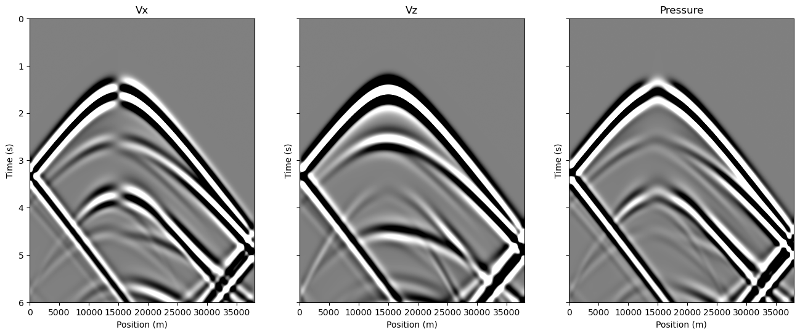

Wave propagation
Contents
Wave propagation#
import numpy as np
import matplotlib.pyplot as plt
from IPython.display import clear_output
# Import CGeo_elastic classes
import sys, os
sys.path.append(os.path.abspath("../../"))
import compgeo.CGeo_elastic as ela
Defining the 2D elastic model (Corner edge model)#
# Model size in grid cells
nz = 249
nx = 381
dz = 100
dx = 100
# Corner edge model with Poisson ratio = 0.25
vpdata = np.ones([nz,nx])*6000
vpdata[89:, 131:] = 9000
rhodata = np.ones([nz,nx])*2500
lam = rhodata*(vpdata**2)/3.
G = lam
vsdata = np.sqrt(G/rhodata)
# Initialize 2D elastic model class and plot model
Model = ela.Elastic_model(vpdata, vsdata,
rhodata, dx, dz, 0.0, 0.0)
fig, ax = Model.plot()

Source wavelet properties#
# Sampling and modeling length (6 seconds = (nt-1)*dt)
dt = 5e-3
nt = 1201
f0=(40/(np.pi**2))**.5 # Dominant frequency
t0=0.6 # Time delay
# Source position in grid points
sx = 150
sz = 58
# Receiver depth in grid points for the recordings
rz = 1
Source = ela.Source(nt, dt, sx, sz) # Source class
Source.Ricker(f0,t0,0) # Initializing a source wavelet
fig, ax = Source.plot()
Setup finite difference modelling#
# Initialize the classes to solve the Elastodynamic equations
Waves = ela.Elastic_waves(Model,nt,dt)
Derivative = ela.Derivatives()
# Create containers for snapshots
# These require lots of memory
P_snaps = np.zeros([nz,nx,nt]) # pressure
Vx_snaps = np.zeros([nz,nx,nt]) # vx
Vz_snaps = np.zeros([nz,nx,nt]) # vz
# Create containers for seismograms
# just below the free surface
P_record= np.zeros([nt,nx]) # pressure
Vx_record = np.zeros([nt,nx]) # vx
Vz_record = np.zeros([nt,nx]) # vz
# Check stability of FD modeling scheme
dtstab = Waves.Courant_stability(np.max(Model.vp))
if(dt > dtstab):
raise Exception("The value of dt should not exceed",
"the stability limit of:",
dtstab, "The value of dt was:", dt)
Running finite difference modelling#
# Loop over time
for it in range(0,nt):
# Extrapolate waves one time step
Waves.forwardStep(Derivative, Model)
# Adding pressure source
Waves.insertPressure(Source, it)
# Adding force source(s)
# Clockwise angle gives force direction (180 is down)
#angle = 180
#Waves.insertForce(Source, Model, angle, it)
# Recording a seismogram
P_record[it, :] = Waves.recordPressure(rz)
Vx_record[it, :] = Waves.recordVelocity(rz, "x")
Vz_record[it, :] = Waves.recordVelocity(rz, "z")
# Record snapshots
Vx_snaps[:,:,it] = Waves.Vx
Vz_snaps[:,:,it] = Waves.Vz
P_snaps[:,:,it] = 0.5*(Waves.Sxx + Waves.Szz)
if(it % np.floor(nt/20) == 0):
clear_output(wait=True)
print("Progress:", np.round(100*it/(nt-1)), "%")
Progress: 100.0 %
Plot seismograms#
fig, ax = plt.subplots(1,3, sharey=True, figsize=(16,24))
extents = [0, (nx-1)*dx, (nt-1)*dt, 0]
# Vx
vlim = 0.1*np.min(Vx_record)
ax[0].imshow(Vx_record,vmin=vlim, vmax=-vlim,
extent=extents, aspect=8000, cmap="gray")
ax[0].set_xlabel("Position (m)")
ax[0].set_ylabel("Time (s)")
ax[0].set_title("Vx")
# Vz
vlim = 0.1*np.min(Vz_record)
ax[1].imshow(Vz_record,vmin=vlim, vmax=-vlim,
extent=extents, aspect=8000, cmap="gray")
ax[1].set_xlabel("Position (m)")
ax[1].set_ylabel("Time (s)")
ax[1].set_title("Vz")
# Pressure
vlim = 0.1*np.min(P_record)
ax[2].imshow(P_record,vmin=vlim, vmax=-vlim,
extent=extents, aspect=8000, cmap="gray")
ax[2].set_xlabel("Position (m)")
ax[2].set_ylabel("Time (s)")
ax[2].set_title("Pressure")
plt.show()

Plot snapshots#
fig, ax = plt.subplots(4,3, sharex=True,
sharey=True, figsize=(12,12))
extents = [0, (nx-1)*dx, (nz-1)*dz, 0]
snapit = int(np.floor(0.995/dt)) # initial time
delta_snap = int(np.floor(0.5/dt)) # delta time
for i in range(0,4): # 4 snaps
# Vx
vlim = 0.1*np.min(Vx_snaps[:,:,snapit])
ax[i,0].imshow(Vx_snaps[:,:,snapit], vmin=vlim,
vmax=-vlim, extent=extents, cmap="gray")
ax[i,0].grid()
ax[i,0].set_ylabel("Depth (m)")
# Vz
vlim = 0.1*np.min(Vz_snaps[:,:,snapit])
ax[i,1].imshow(Vz_snaps[:,:,snapit], vmin=vlim,
vmax=-vlim, extent=extents, cmap="gray")
if i == 0:
ax[i,1].set_title("Vz, " + str((snapit-1)*dt) + " s")
else:
ax[i,1].set_title(str((snapit-1)*dt) + " s")
ax[i,1].grid()
# Pressure
vlim = 0.1*np.min(P_snaps[:,:,snapit])
ax[i,2].imshow(P_snaps[:,:,snapit], vmin=vlim,
vmax=-vlim, extent=extents, cmap="gray")
ax[i,2].grid()
snapit = snapit+delta_snap
ax[0,0].set_title("Vx");
ax[0,2].set_title("Pressure");
ax[3,0].set_xlabel("Position (m)")
ax[3,1].set_xlabel("Position (m)")
ax[3,2].set_xlabel("Position (m)")
plt.show()